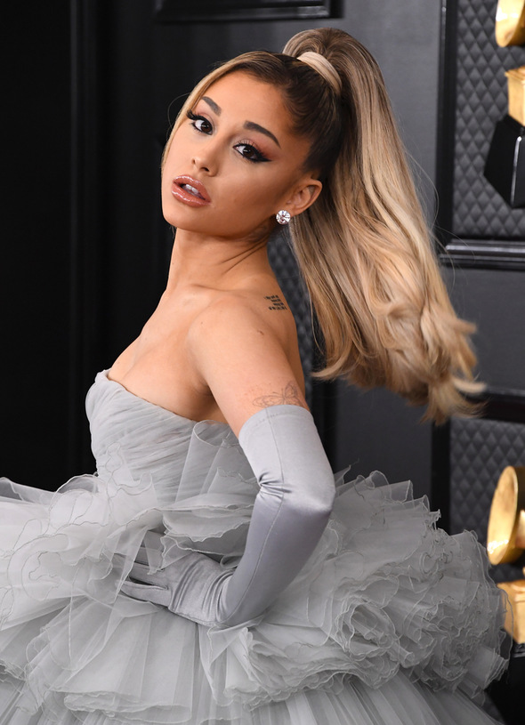

Ariana Grande-Butera je američka pop i R&B pjevačica, tekstopisac te glumica. Svjetsku slavu je stekla putem mjuzikla Broadway, te preuzimanjem uloge Cat Valentine u televizijskim serijama Victorious i Sam & Cat. Ariana glazbena karijera počela je soundtrackom Music from Victorious2011. Potpisala je ugovor za izdavačku kuću Republic Records, koja je objavila njen debitantski studijski album, YoursTruly 2013., koji je debitirao kao broj jedan na U.S. Billboard 200. Singl,"The Way", ušao je u top deset hitova naBillboard Hot 100 ljestvici sa kritikama koje su usporedile njen široki vokalni raspon sa onim od Mariah Carey.
ArianaGrande je snimila svoj prvi studijski album Yours Truly, izvorno pod nazivom "Daydreamin",tijekom trogodišnjeg razdoblja. Izdan je 30. kolovoza 2013. U rujnu 2013. debitirao je na prvom mjestu na američkom Billboard 200 albumu s 138.000 primjeraka albuma prodanog u prvom tjednu, čineći Ariana prvom ženskom umjetnicom nakon Keshe koja je debitirala na vrhu ljestvice i rangirala na 15. mjestu. Yours Truly je također debitirao u top 10 u nekoliko drugih zemalja, uključujući Australiju, Veliku Britaniju, Irsku i Nizozemsku.Arianaje među najboljim pjevačicama svijeta.